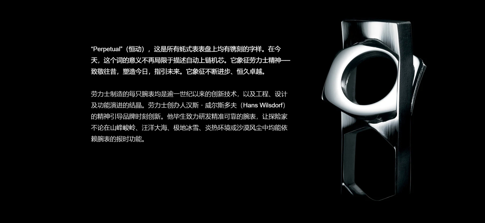
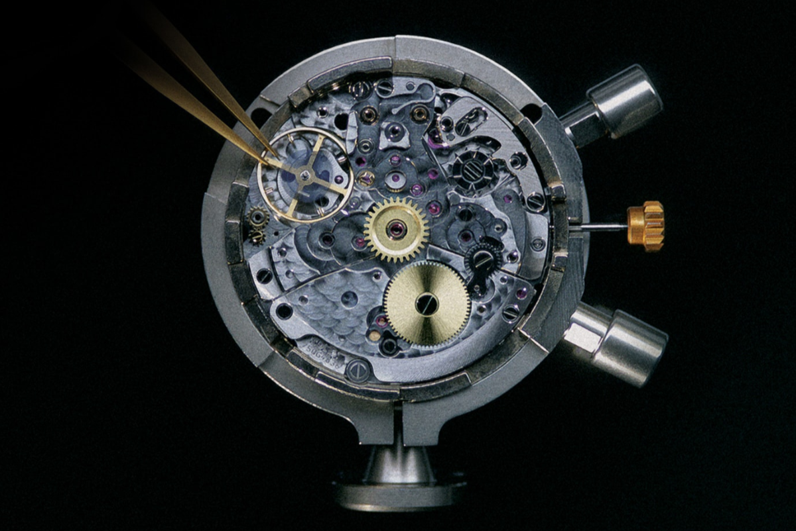
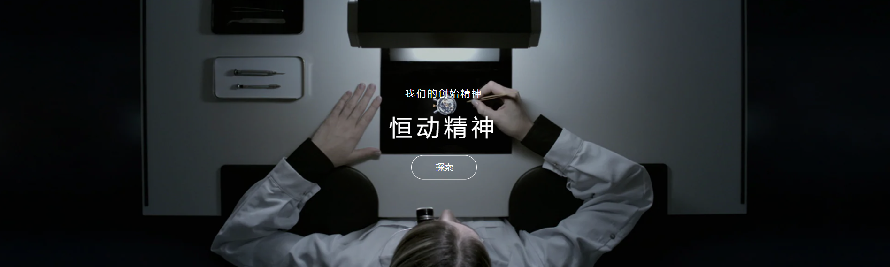

汉斯・威尔斯多夫高瞻远瞩，他带领品牌在设计、材质及科学方面革新突破，推出的腕表恒久耐用、长盛不衰。时至二十一世纪，他的成就与理念作为公司文化代代传承，其价值观亦获珍而重之，在每个生产环节都确保卓越品质。劳力士的所有工匠、工程师及科学家均为保护和发展品牌特质而自豪。
今日，我们更是惊叹于汉斯・威尔斯多夫对未来高屋建瓴的远见卓识。凭借恒动摆铊，蚝式腕表无需外在能源，而是通过手腕摆动自动上链。蚝式恒动型是现代腕表的典范，历久弥新、恒久耐用。
腕表坚固的蓝水晶镜面以下，就是自动上链机芯。这个机械杰作由数百件细小组件构成，经过严格工序，装配在防水表壳中。然而，恒久运作、精准可靠，并不只讲求科学技术，更要心怀理念，相信唯有不断进步、持守卓越，方能裨益后世。此理念驱使劳力士坚持在各方面一直拓展界限。在追求恒动卓越的路上，不论是公司为制造和测试腕表而研发的专门器材、研究与开发实验室，以及不断改善以达至优秀水平的工坊，所有细节均严谨处理。每只腕表必须呈现最高品质，出色掌握防水技术，完美体现公司对恒动卓越的不懈追求。
1926年，汉斯・威尔斯多夫推出全球首只防水蚝式腕表。三十多年后，于1960年，劳力士的专家让一只时计跟随的里雅斯特号（Trieste），共同抵达海洋最深处──马里亚纳海沟（Mariana Trench） 。至今仅有两次同类的探险旅程。最近一次为2012年，探险家兼电影制作人詹姆斯・卡梅隆（James Cameron），携同固定在潜水器液压臂上的实验型腕表Rolex Deepsea Challenge，下潜至海沟的底部。就如首次探险，腕表在水深11公里，镜面受压达12公吨，下仍然准确报时，回到水面时丝毫无损。

劳力士为各领域研发腕表，先后推出专为潜水、赛车、登山、航空、航海及探险而设计的腕表。多年来，它们经过不断改良，添加崭新功能，令腕表性能更为完备，更能保障佩戴者的安全。
劳力士一直专注创新发明，着重设计及工程技术方面的革新，多年来共累积逾500项专利，包括设于外圈部分的字圈，以及腕表内部的精细组件。Chronergy擒纵系统便是其中之一。系统会交替振动，缔造机械腕表独有的滴答声响，定义机芯计时区间。这堪为微技术的杰作，其繁复严格的工序，彰显劳力士的深厚知识涵养与无限创意。
与此同时，创新工序亦提升腕表的美学特色，且毫不影响其非凡的坚固性能。格林尼治型 II 的红蓝双色Cerachrom陶质字圈，是多年来研究开发的结晶：通过复杂的化合物混合和独特程序，打造彩色外圈。加热后，陶质字圈变得极其坚固，难以刮损。
此外，还有许多发明能够彰显劳力士在材质研发领域的卓越成就，当中便有呈现柔和粉红色调的专利永恒玫瑰金，以及蚝式钢，这款独特的超合金钢不仅抗震防刮，磨光后更能散发夺目光泽。

劳力士的所有制表工序均在瑞士完成，因此品牌能够完全确保品质。腕表制作由四座制造所分工，它们负责设计和制造主要组件。从铸造金材质、制作微细的游丝和轴承，以至打造表壳和最后组装，每个工序均是由劳力士独立完成。每只机芯在装进表壳内前，均获得瑞士天文台认证（COSC）
然后，完成组装后的腕表将再通过劳力士严格测试，确保符合 "超卓天文台精密时计” 的标准。绿色印章是这项认证的象征，每只劳力士腕表均附上此印章，并附有全球五年保用保证。
劳力士腕表精致优美，其美态并不局限于外观设计，内在元素亦同样令人目不暇给。在这个即弃文化盛行的时代，它是值得珍爱的宝物，提醒我们所需要传承的价值观。它是劳力士卓越世界的一部分，是永恒的象征，值得拥有。它，恒动不息。